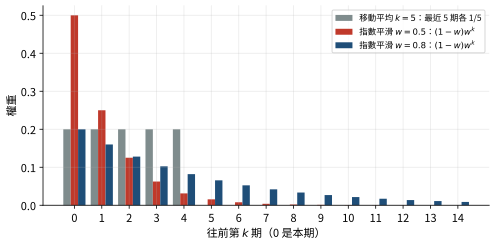
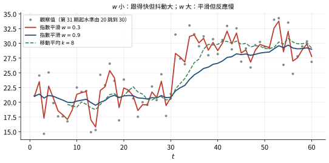
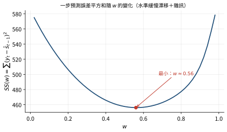
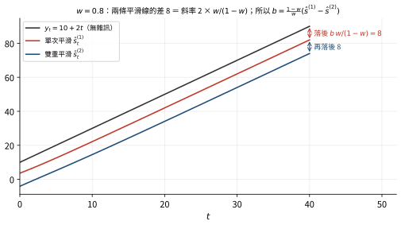
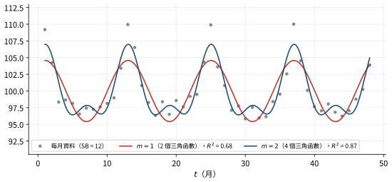
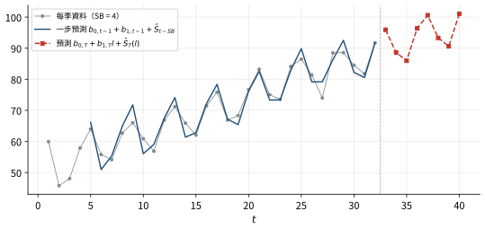
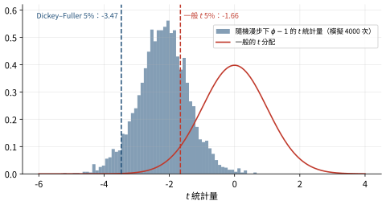
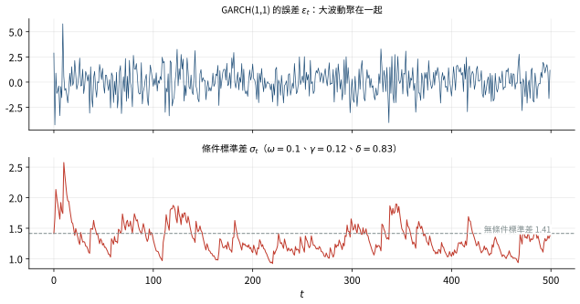

本章內容 21.1 移動平均平滑 21.2 指數平滑 21.3 季節模型 21.4 單根檢定 21.5 ARCH 與 GARCH 本章對應講義第 21 課，讀本是 Frees 第 9 章。會用到第 19 章的隨機漫步、第 20 章的 AR(1)。
記號。 \(\hat s_t\)（或 \(\hat s^{(1)}_t\)）是平滑後的數列，\(\hat s^{(2)}_t\) 是再平滑一次；\(w\) 是指數平滑的參數（\(w\) 是放在舊資訊上的權重 ，\(1-w\) 放在新觀察上）；\(k\) 是移動平均的長度；\(b_{0,t}\)、\(b_{1,t}\) 是時間 \(t\) 的水準（截距）與趨勢（斜率）估計；SB 是季節週期的長度（seasonal base）。
考點地圖：這一章在考試裡的位置
對應考綱 ：主題 3「時間數列模型」：移動平均與指數平滑（含雙重平滑）、季節模型、單根檢定、ARCH/GARCH。
SOA 官方樣題裡的樣子 ：第 46 題（單次與雙重指數平滑的兩步預測，習題 21.10 ）。其他的考法多半是計算平滑值、Holt–Winters 的一步更新、ARCH/GARCH 的無條件變異數，以及名詞概念。
會考的東西
題目長什麼樣
判斷或計算的依據
移動平均
單次、雙重移動平均
\(\hat s_t=\frac1k\sum_{j=0}^{k-1}y_{t-j}\)；趨勢 \(2(\hat s-\hat s^{(2)})/(k-1)\)
指數平滑
求平滑值、預測、反推 \(w\)
\(\hat s_t=(1-w)y_t+w\hat s_{t-1}\)；預測 \(\hat y_{T+l}=\hat s_T\)
雙重指數平滑
求趨勢、截距、多步預測
\(b_0=2\hat s-\hat s^{(2)}\)，\(b_1=\frac{1-w}w(\hat s-\hat s^{(2)})\)
一步預測誤差
平均誤差、\(SS(w)\)
\(e_t=y_t-\hat s_{t-1}\)
Holt–Winters
更新水準、趨勢、季節因子，預測
(21.6)、(21.7)
單根檢定
名詞與性質
Dickey–Fuller 臨界值比一般 \(t\) 更極端；ADF 加入落後差分
ARCH/GARCH
無條件變異數、平穩條件
\(\omega/(1-\sum\gamma_j-\sum\delta_j)\)
讀完這一章要會 ：
計算移動平均與指數平滑，說明 \(w\) 的意義，推導兩種寫法等價。
推導雙重平滑的趨勢公式，用它做多步預測。
用三角函數迴歸、SAR、Holt–Winters 處理季節性。
說出單根檢定的設定與為什麼要特殊的臨界值。
計算 ARCH/GARCH 的條件變異數與無條件變異數。
21.1 移動平均平滑 把最近 \(k\) 期平均，得到較平滑的新數列：
\[\hat s_t=\frac{y_t+y_{t-1}+\cdots+y_{t-k+1}}k=\hat s_{t-1}+\frac{y_t-y_{t-k}}k .\]
第二個寫法說明更新時只要加入新的一期、去掉最舊的一期。
沒有趨勢 時，預測 \(\hat y_{T+l}=\hat s_T\)，所有 \(l\) 都一樣。移動平均就是加權最小平方：最近 \(k\) 期權重 1，更早的權重 0。
雙重移動平均
有趨勢時，把 \(\hat s_t\) 再做一次 \(k\) 期移動平均，得到 \(\hat s^{(2)}_t\)。趨勢估計與預測：
\[b_{1,T}=\frac{2(\hat s_T-\hat s^{(2)}_T)}{k-1},\qquad\hat y_{T+l}=\hat s_T+b_{1,T}\,l .\]
推導：雙重移動平均的趨勢公式
若 \(y_t=a+bt\)（沒有雜訊），\(k\) 期平均是 \(k\) 個等間隔點的中點：
\[\hat s_t=a+b\Big(t-\frac{k-1}2\Big),\]
也就是比數列本身落後 \(b(k-1)/2\)。對 \(\hat s_t\)（同樣是斜率 \(b\) 的直線）再平均一次，又落後 \(b(k-1)/2\)：
\[\hat s_t-\hat s^{(2)}_t=\frac{b(k-1)}2\quad\Longrightarrow\quad b=\frac{2(\hat s_t-\hat s^{(2)}_t)}{k-1}.\]
兩條平滑線的落差，就是斜率乘上已知的落後期數。
例題 21-1：雙重移動平均（習題 21.7）
數列 4、5、6、12、5、10、9、15，\(k=4\)。
\(\hat s_t\) 是第 \(t-3\) 到第 \(t\) 期的平均；要算 \(\hat s^{(2)}_8\)，需要 \(\hat s_5,\ldots,\hat s_8\)：
\(\hat s_5=(5+6+12+5)/4=7\)，\(\hat s_6=(6+12+5+10)/4=8.25\)，\(\hat s_7=(12+5+10+9)/4=9\)，\(\hat s_8=(5+10+9+15)/4=9.75\)。
\(\hat s^{(2)}_8=(7+8.25+9+9.75)/4=8.5\)。
這一節的精選習題
You are given the following time series:
4 5 6 12 5 10 9 15
Calculate the double-smoothed moving average at the last observation time, \(\hat s_8^{(2)}\), using a running average length of 4.
(A) 8.5
(B) 8.6875
(C) 8.75
(D) 8.875
(E) 9.75
隱藏解答 中文題意
時間數列：4 5 6 12 5 10 9 15。用長度 4 的移動平均，求最後一期的雙重平滑移動平均 \(\hat s^{(2)}_8\)。
(A) 8.5 (B) 8.6875 (C) 8.75 (D) 8.875 (E) 9.75
解析
\(\hat s_5=7\)，\(\hat s_6=8.25\)，\(\hat s_7=9\)，\(\hat s_8=9.75\)。\(\hat s^{(2)}_8=(7+8.25+9+9.75)/4=8.5\)。
易錯提醒
(E) 9.75 是單次的 \(\hat s_8\)。
觀念題（4 題，仿 SOA 樣題的觀念判斷與小計算，含跨章節）
A series has \(y_1=6\), \(y_2=9\), \(y_3=12\), \(y_4=3\).
Calculate the moving average \(\hat s_4\) with \(k=3\).
(A) 8
(B) 7.5
(C) 9
(D) 6
(E) 10.5
隱藏解答 中文題意
數列 6、9、12、3，求 \(k=3\) 的移動平均 \(\hat s_4\)。
解析
\((9+12+3)/3=8\)。(B) 是四項平均。
For a moving average with \(k=4\), \(\hat s_{t-1}=10\), the new observation is \(y_t=16\), and the observation dropped is \(y_{t-4}=4\).
Calculate \(\hat s_t\).
(A) 11.5
(B) 16
(C) 13
(D) 14.5
(E) 10
隱藏解答 中文題意
\(k=4\) 的移動平均，\(\hat s_{t-1}=10\)，新觀察 \(y_t=16\)，移出的 \(y_{t-4}=4\)。求 \(\hat s_t\)。
解析
\(\hat s_t=\hat s_{t-1}+(y_t-y_{t-k})/k=10+12/4=13\)。
Double moving average smoothing with \(k=5\) gives \(\hat s_T=20\) and \(\hat s^{(2)}_T=16\).
Calculate the estimated trend \(b_{1,T}\).
(A) 4
(B) 2
(C) 1
(D) 0.8
(E) 1.6
隱藏解答 中文題意
\(k=5\) 的雙重移動平均，\(\hat s_T=20\)、\(\hat s^{(2)}_T=16\)。求趨勢 \(b_{1,T}\)。
解析
\(2(20-16)/(5-1)=2\)。(D) 是除以 5 再乘 1。
A noiseless series \(y_t=a+3t\) is smoothed by a moving average with \(k=5\).
Determine how far the smoothed series lies below the original series.
(A) 3
(B) 15
(C) 7.5
(D) 6
(E) 12
隱藏解答 中文題意
沒有雜訊的 \(y_t=a+3t\) 用 \(k=5\) 的移動平均平滑，平滑值比原數列低多少？
解析
\(k\) 期平均落在中點，落後 \(b(k-1)/2=3(2)=6\)。
21.2 指數平滑 一、權重與遞迴
移動平均的權重在第 \(k\) 期突然掉到 0。指數平滑 讓權重平滑地遞減：往前第 \(k\) 期的權重與 \(w^k\) 成正比（\(0<w<1\)）。權重總和 \(\sum_{k\ge0}w^k=1/(1-w)\)，所以
\[\hat s_t=\frac{y_t+wy_{t-1}+w^2y_{t-2}+\cdots}{1/(1-w)}=(1-w)\sum_{k\geq0}w^ky_{t-k}.\tag{21.1}\]
推導：兩種寫法等價，以及它是加權最小平方
把 (21.1) 的第一項拆出來：
\[\hat s_t=(1-w)y_t+w\Big[(1-w)\sum_{k\geq0}w^ky_{t-1-k}\Big]=(1-w)y_t+w\,\hat s_{t-1}.\tag{21.2}\]
新的平滑值是「新觀察」與「舊平滑值」的加權平均。
加權最小平方 ：選常數 \(c\) 讓 \(\sum_kw^k(y_{t-k}-c)^2\) 最小，微分得 \(c=\sum w^ky_{t-k}/\sum w^k\)，正是 (21.1)。
\(w\) 小 ：新觀察權重大，平滑很少、反應快、抖動大。\(w\) 大 ：舊資訊權重大，平滑很多、反應慢。實務上沒有第 1 期以前的資料，(21.1) 的和只加到 \(y_1\)（或 \(y_0\)），權重總和不到 1；讀本的處理是起始值 \(\hat s_0\) 可以設為 0、數列平均或 \(y_1\)。題目會指定起始值 ，照做即可。
預測 ：\(\hat y_{T+l}=\hat s_T\)，對所有 \(l\)。

權重的比較。移動平均（\(k=5\)）最近 5 期各 0.2，之後為 0；指數平滑的權重 \((1-w)w^k\) 幾何遞減，\(w=0.5\) 時集中在最近幾期，\(w=0.8\) 時分散得較遠。 
水準在第 31 期從 20 跳到 30。\(w=0.3\) 幾乎立刻跟上，但隨著雜訊上下跳；\(w=0.9\) 很平滑，但花了十多期才追上新水準。移動平均（\(k=8\)）在第 38 期左右完全反映新水準。
例題 21-2：指數平滑（講義小測驗 21-1、習題 21.4）
小測驗 21-1 ：12、18、20、21、25，\(w=0.6\)，起始 \(y_0=0\)。用 (21.1)：
\[\hat s_5=0.4\big(25+0.6(21)+0.36(20)+0.216(18)+0.1296(12)\big)=0.4(50.243)=20.10 .\]
用遞迴 \(\hat s_t=0.4y_t+0.6\hat s_{t-1}\) 從 \(\hat s_0=0\) 開始，結果相同。
習題 21.4 ：\(w=0.1\)，\(\hat s_{95}=7.1\)，\(y_{96\sim100}\) 依序 7.1、8.9、5.5、8.2、7.3。\(\hat s_t=0.9y_t+0.1\hat s_{t-1}\) 遞迴四次（\(\hat s_{96}=7.1\)）：\(\hat s_{100}=7.366\)，就是 \(y_{101}\) 的預測。\(w=0.1\) 幾乎不平滑，平滑值很接近最後一個觀察。
二、選 \(w\)：一步預測誤差
用模型「回頭預測」過去：一步預測誤差 \(e_t=y_t-\hat s_{t-1}\)，選讓
\[SS(w)=\sum_{t=1}^T(y_t-\hat s_{t-1})^2\]
最小的 \(w\)。

水準緩慢漂移加上雜訊的 80 期資料。\(w\) 太小時預測追著雜訊跑，\(w\) 太大時跟不上水準的漂移；\(SS(w)\) 在 \(w\approx0.56\) 最小。 三、雙重指數平滑
有趨勢時，把 \(\hat s^{(1)}_t\) 再指數平滑一次得到 \(\hat s^{(2)}_t\)。截距、斜率與預測：
\[b_{0,T}=2\hat s^{(1)}_T-\hat s^{(2)}_T,\qquad b_{1,T}=\frac{1-w}w\big(\hat s^{(1)}_T-\hat s^{(2)}_T\big),\qquad\hat y_{T+l}=b_{0,T}+b_{1,T}\,l .\tag{21.3}\]
推導：雙重指數平滑的公式
若 \(y_t=a+bt\)，由 (21.1)：
\[\hat s_t=(1-w)\sum_kw^k\big(a+b(t-k)\big)=a+bt-b(1-w)\sum_kkw^k=a+bt-b\frac w{1-w},\]
因為 \(\sum_kkw^k=w/(1-w)^2\)。所以單次平滑落後 數列 \(b\,w/(1-w)\)；同理 \(\hat s^{(2)}\) 又落後 \(\hat s^{(1)}\) 同樣的量。於是：
斜率 ：\(\hat s^{(1)}-\hat s^{(2)}=b\,w/(1-w)\)，\(b=\frac{1-w}w(\hat s^{(1)}-\hat s^{(2)})\)。目前水準 ：\(y_T=\hat s^{(1)}_T+\) 落後量 \(=\hat s^{(1)}_T+(\hat s^{(1)}_T-\hat s^{(2)}_T)=2\hat s^{(1)}_T-\hat s^{(2)}_T\)。

沒有雜訊的直線 \(y_t=10+2t\)，\(w=0.8\)。單次平滑一直比直線低 \(2\times0.8/0.2=8\)，雙重平滑再低 8。把落差除以 \(w/(1-w)=4\) 就得到斜率 2。
例題 21-3：單次與雙重平滑的預測（樣題 46）
\(w=0.8\)，\(y_{100}=100.2\)，\(\hat s^{(1)}_{99}=95.1\)，\(\hat s^{(2)}_{98}=89.9\)；預測四捨五入到一位小數、趨勢到三位。
單次 ：\(\hat s^{(1)}_{100}=0.2(100.2)+0.8(95.1)=96.1\)，\(F=\hat y_{102}=96.1\)。
雙重 ：表中 \(\hat s^{(2)}\) 只給到第 98 期，要遞迴兩次：\(\hat s^{(2)}_{99}=0.2(95.1)+0.8(89.9)=90.9\)，\(\hat s^{(2)}_{100}=0.2(96.1)+0.8(90.9)=91.9\)。
\(b_1=\frac{0.2}{0.8}(96.1-91.9)=1.05\)，\(b_0=2(96.1)-91.9=100.3\)，\(G=100.3+2(1.05)=102.4\)。
\(|F-G|=6.3\)。
易錯提醒
本書的 \(w\) 是舊資訊 的權重：\(\hat s_t=(1-w)y_t+w\hat s_{t-1}\)。其他教材常反過來寫，看清楚公式。
預測 \(y_{T+1}\) 用的是 \(\hat s_T\)；一步預測誤差是 \(y_t-\hat s_{t-1}\)，不是 \(y_t-\hat s_t\)（習題 21.8 ）。
起始值不同答案不同：習題 21.1 若從 \(\hat s_0=y_0=50\) 開始遞迴，會得到 52.4 而不是 48.512。用題目指定的方法。
雙重平滑的 \(\hat s^{(2)}\) 是對 \(\hat s^{(1)}\) 平滑，不是對 \(y\)。
考試怎麼考：平滑
計算平滑值（習題 21.1 ～21.6 ）；由兩個平滑值反推 \(w\)（習題 21.3 ，解一元二次方程式）。
一步預測的平均誤差（VEE Summer 05:3、習題 21.8 ）。
雙重平滑的趨勢與預測（樣題 46、習題 21.9 ）；雙重移動平均（習題 21.7 ）。
這一節的精選習題
You are given the following time series:
\(t\)
0
1
2
3
4
\(y_t\)
50
50
60
44
56
You forecast this series using an exponentially weighted moving average model with \(w=0.6\).
Determine the forecast of \(y_6\).
隱藏解答 中文題意
時間數列：
用 \(w=0.6\) 的指數加權移動平均模型預測。求 \(y_6\) 的預測。
（數據、圖表與選項見上方英文題目。）
解析
\(y_6\) 與 \(y_5\) 的預測相同，都是 \(\hat s_4\)。用 (21.1)，權重 \((1-w)w^k\) 加到資料的起點：
\[\hat s_4=0.4\big(56+0.6(44)+0.36(60)+0.216(50)+0.1296(50)\big)=0.4(121.28)=48.512 .\]
等價於從 \(\hat s_{-1}=0\) 開始遞迴 \(\hat s_t=0.4y_t+0.6\hat s_{t-1}\)。
易錯提醒
若從 \(\hat s_0=y_0=50\) 開始遞迴，會得到 52.4。兩種起始方式答案不同；本題依講義用 (21.1) 的直接加權和。
You are applying exponential smoothing to a time series. You are given that \(y_{20}=100\), \(y_{21}=101\), \(\hat s_{19}=110\), \(w=0.6\).
Determine \(\hat s_{21}\).
隱藏解答 中文題意
指數平滑：\(y_{20}=100\)，\(y_{21}=101\)，\(\hat s_{19}=110\)，\(w=0.6\)。求 \(\hat s_{21}\)。
解析
\(\hat s_{20}=0.4(100)+0.6(110)=106\)；\(\hat s_{21}=0.4(101)+0.6(106)=104\)。
[Old exam] You are given the following information about a series of observations, \(y_t\), \(t=1,2,3,\ldots,100\):
\(|y_t|<10\) for all \(t\)
\(y_{96}=7.1\), \(y_{97}=8.9\), \(y_{98}=5.5\), \(y_{99}=8.2\), \(y_{100}=7.3\)
You are to use exponential smoothing with \(w=0.1\) to forecast values beyond the end of the observation period. You are given that the smoothed value \(\hat s_{95}=7.1\).
Calculate the forecasted value of \(y_{101}\).
(A) 7.1
(B) 7.2
(C) 7.3
(D) 7.4
(E) 7.5
隱藏解答 中文題意
（舊考題）觀察 \(y_t\)，\(t=1,\ldots,100\)，\(|y_t|<10\)；\(y_{96}=7.1\)、\(y_{97}=8.9\)、\(y_{98}=5.5\)、\(y_{99}=8.2\)、\(y_{100}=7.3\)。用 \(w=0.1\) 的指數平滑預測，已知 \(\hat s_{95}=7.1\)。求 \(y_{101}\) 的預測。
(A) 7.1 (B) 7.2 (C) 7.3 (D) 7.4 (E) 7.5
解析
\(\hat s_t=0.9y_t+0.1\hat s_{t-1}\)：\(\hat s_{96}=7.1\)，\(\hat s_{97}=8.72\)，\(\hat s_{98}=5.822\)，\(\hat s_{99}=7.962\)，\(\hat s_{100}=7.366\)。\(\hat y_{101}=\hat s_{100}=7.366\)。
易錯提醒
\(w=0.1\) 是舊平滑值的權重，新觀察的權重是 0.9。
[120-81-95:13] You use exponential smoothing with \(w=0.9\) and \(\hat s_0=27\) to forecast the following time series:
\(t\)
0
1
2
3
4
5
\(y_t\)
27
20
30
10
60
15
Determine \(\hat s_5\).
(A) 16
(B) 19
(C) 22
(D) 26
(E) 27
隱藏解答 中文題意
（120-81-95:13）用 \(w=0.9\)、\(\hat s_0=27\) 的指數平滑預測以下數列：
求 \(\hat s_5\)。
(A) 16 (B) 19 (C) 22 (D) 26 (E) 27
（數據、圖表與選項見上方英文題目。）
解析
權重：\(y_5\) 0.1、\(y_4\) 0.09、\(y_3\) 0.081、\(y_2\) 0.0729、\(y_1\) 0.06561，剩下的 \(0.9^5=0.59049\) 放在 \(\hat s_0\)：
\[\hat s_5=0.1(15)+0.09(60)+0.081(10)+0.0729(30)+0.06561(20)+0.59049(27)=27.15 .\]
易錯提醒
\(w=0.9\) 平滑很重，起始值 27 仍占將近 60% 的權重。
[VEE-Applied Statistics-Summer 05:3] You use exponential smoothing with \(w=0.9\) to make one-step-ahead forecasts, that is, \(\hat y_{t+1}=\hat s_t\), \(t=0,1,2,3\), for the following data:
\(t\)
0
1
2
3
4
\(y_t\)
80
81
89
74
\(\hat y_{t+1}\)
81
Determine the mean forecast error \(\frac14\sum_{t=1}^4(y_t-\hat y_t)\).
(A) −0.5
(B) −0.1
(C) 0.0
(D) 0.1
(E) 0.5
隱藏解答 中文題意
（VEE 應用統計 2005 夏:3）用 \(w=0.9\) 的指數平滑做一步預測，\(\hat y_{t+1}=\hat s_t\)，\(t=0,1,2,3\)：
求平均預測誤差 \(\frac14\sum_{t=1}^4(y_t-\hat y_t)\)。
(A) −0.5 (B) −0.1 (C) 0.0 (D) 0.1 (E) 0.5
（數據、圖表與選項見上方英文題目。）
解析
\(\hat s_0=81\)；\(\hat s_1=0.1(80)+0.9(81)=80.9\)；\(\hat s_2=80.91\)；\(\hat s_3=81.719\)。
誤差：\(80-81=-1\)，\(81-80.9=0.1\)，\(89-80.91=8.09\)，\(74-81.719=-7.719\)。平均 \(-0.529/4=-0.132\)。
You are given the time series
\(t\)
1
2
3
4
\(y_t\)
1
4
8
11
You perform double exponential smoothing with smoothing constant \(w=0.8\) and starting values \(\hat s_0^{(1)}=\hat s_0^{(2)}=0\).
Calculate the estimated trend.
隱藏解答 中文題意
時間數列：
用平滑常數 \(w=0.8\)、起始值 \(\hat s^{(1)}_0=\hat s^{(2)}_0=0\) 做雙重指數平滑。求估計的趨勢。
（數據、圖表與選項見上方英文題目。）
解析
\(t\)
1
2
3
4
\(\hat s^{(1)}_t\)
0.2
0.96
2.368
4.0944
\(\hat s^{(2)}_t\)
0.04
0.224
0.6528
1.34112
\(b_1=\frac{0.2}{0.8}(4.0944-1.34112)=0.6883\)。
易錯提醒
資料的真正斜率約 3.4，但起始值 0 離資料很遠、\(w=0.8\) 又平滑很重，四期還不夠讓估計穩定。
[SRM Sample Question #46] A time series was observed at times \(0,1,\ldots,100\). The last four observations along with estimates based on exponential and double exponential smoothing with \(w=0.8\) are:
Time (\(t\))
97
98
99
100
Observation (\(y_t\))
96.9
98.1
99.0
100.2
Estimates (\(\hat s_t^{(1)}\))
93.1
94.1
95.1
Estimates (\(\hat s_t^{(2)}\))
88.9
89.9
All forecasts should be rounded to one decimal place and the trend should be rounded to three decimal places.
Let \(F\) be the predicted value of \(y_{102}\) using exponential smoothing with \(w=0.8\).
Let \(G\) be the predicted value of \(y_{102}\) using double exponential smoothing with \(w=0.8\).
Calculate the absolute difference between \(F\) and \(G\), \(|F-G|\).
(A) 0.0
(B) 2.1
(C) 4.2
(D) 6.3
(E) 8.4
隱藏解答 中文題意
（SOA 樣題第 46 題）時間數列在時間 \(0,1,\ldots,100\) 觀察。最後四個觀察與 \(w=0.8\) 的單次、雙重指數平滑估計：
所有預測四捨五入到一位小數，趨勢四捨五入到三位小數。
令 \(F\) 是用 \(w=0.8\) 指數平滑對 \(y_{102}\) 的預測，\(G\) 是用 \(w=0.8\) 雙重指數平滑對 \(y_{102}\) 的預測。求 \(|F-G|\)。
(A) 0.0 (B) 2.1 (C) 4.2 (D) 6.3 (E) 8.4
（數據、圖表與選項見上方英文題目。）
解析
\(\hat s^{(1)}_{100}=0.2(100.2)+0.8(95.1)=96.1\)，\(F=96.1\)。
\(\hat s^{(2)}_{99}=0.2(95.1)+0.8(89.9)=90.9\)；\(\hat s^{(2)}_{100}=0.2(96.1)+0.8(90.9)=91.9\)。
\(b_1=\frac{0.2}{0.8}(96.1-91.9)=1.05\)，\(b_0=2(96.1)-91.9=100.3\)，\(G=100.3+2(1.05)=102.4\)。
\(|F-G|=6.3\)。
易錯提醒
\(y_{102}\) 是從 100 往後 2 期，\(l=2\)。單次平滑的預測不隨 \(l\) 改變。
觀念題（8 題，仿 SOA 樣題的觀念判斷與小計算，含跨章節）
Exponential smoothing with \(w=0.7\) has \(\hat s_{t-1}=50\), and the new observation is \(y_t=60\).
Calculate \(\hat s_t\).
(A) 53
(B) 57
(C) 55
(D) 60
(E) 50
隱藏解答 中文題意
\(w=0.7\) 的指數平滑，\(\hat s_{t-1}=50\)，新觀察 60。求 \(\hat s_t\)。
解析
\((1-w)y_t+w\hat s_{t-1}=0.3(60)+0.7(50)=53\)。(B) 把權重放反了。
In the exponential smoothing formula \(\hat s_t=(1-w)y_t+w\hat s_{t-1}\), determine the effect of a larger \(w\).
(A) The smoothed series reacts faster to changes
(B) The forecast has a steeper trend
(C) The most recent observation gets more weight
(D) The smoothed series equals the data
(E) More smoothing and a slower reaction to changes
隱藏解答 中文題意
指數平滑 \(\hat s_t=(1-w)y_t+w\hat s_{t-1}\) 中，\(w\) 變大有什麼效果？
解析
\(w\) 是舊資訊的權重：越大越平滑、越慢反應。
Single exponential smoothing gives \(\hat s_T=42\).
Determine the forecast of \(y_{T+5}\).
(A) 42 plus 5 times the trend
(B) 42
(C) \(42w^5\)
(D) \(42(1-w)^5\)
(E) It cannot be determined without \(y_T\)
隱藏解答 中文題意
單次指數平滑 \(\hat s_T=42\)，\(y_{T+5}\) 的預測是多少？
解析
單次指數平滑的預測對所有 \(l\) 都是 \(\hat s_T\)。
In exponential smoothing with \(w=0.5\), determine the weight given to \(y_{t-2}\) in \(\hat s_t\) (ignoring the starting value).
(A) 0.125
(B) 0.25
(C) 0.5
(D) 0.0625
(E) 0.75
隱藏解答 中文題意
\(w=0.5\) 的指數平滑，\(\hat s_t\) 中 \(y_{t-2}\) 的權重是多少（不考慮起始值）？
解析
\((1-w)w^2=0.5(0.25)=0.125\)。(B) 漏乘 \(1-w\)。
A noiseless linear series with slope 3 is exponentially smoothed with \(w=0.75\).
Determine how far the smoothed series lies below the series.
(A) 3
(B) 1
(C) 9
(D) 2.25
(E) 4
隱藏解答 中文題意
斜率 3、沒有雜訊的直線，用 \(w=0.75\) 指數平滑，平滑值比原數列低多少？
解析
落後 \(b\,w/(1-w)=3(3)=9\)。
Double exponential smoothing with \(w=0.6\) gives \(\hat s^{(1)}_T=50\) and \(\hat s^{(2)}_T=46\).
Calculate the forecast \(\hat y_{T+3}\).
(A) 58
(B) 50
(C) 56
(D) 62
(E) 54
隱藏解答 中文題意
\(w=0.6\) 的雙重指數平滑，\(\hat s^{(1)}_T=50\)、\(\hat s^{(2)}_T=46\)。求 \(\hat y_{T+3}\)。
解析
\(b_0=2(50)-46=54\)，\(b_1=\frac{0.4}{0.6}(4)=2.667\)，\(\hat y_{T+3}=54+8=62\)。(E) 只有截距；(A) 用了 \(\frac w{1-w}\)。
Determine the one-step prediction error used in \(SS(w)\) to choose the smoothing parameter.
(A) \(y_t-\hat s_{t-1}\)
(B) \(y_t-\hat s_t\)
(C) \(\hat s_t-\hat s_{t-1}\)
(D) \(y_t-y_{t-1}\)
(E) \(y_t-\bar y\)
隱藏解答 中文題意
選平滑參數的 \(SS(w)\) 用的一步預測誤差是哪一個？
解析
\(y_t\) 的一步預測是 \(\hat s_{t-1}\)。用 \(y_t-\hat s_t\) 時 \(w\to0\) 永遠最好，沒有意義。
Determine which of the following statements is/are true.
I. Exponential smoothing is weighted least squares with geometrically declining weights.
II. A \(k\)-period moving average gives equal weight to the most recent \(k\) observations.
III. With single exponential smoothing, the forecast increases with the horizon when the data trend upward.
(A) I only
(B) II only
(C) III only
(D) I and II only
(E) The correct answer is not given by (A), (B), (C), or (D).
隱藏解答 中文題意
下列哪些正確？
I. 指數平滑是權重幾何遞減的加權最小平方。
II. \(k\) 期移動平均給最近 \(k\) 期相同權重。
III. 單次指數平滑在資料上升時，預測隨期數增加。
解析
III 錯：單次平滑的預測是水平的，有趨勢時要用雙重平滑。
21.3 季節模型 季節效果分兩種，決定了該用哪一類方法：
固定季節效果
隨機季節效果
意思
每年同一季的效果都一樣
季節型態會隨時間慢慢改變
方法
季節虛擬變數、三角函數迴歸
季節自迴歸（SAR）、Holt–Winters
為什麼
迴歸只估一組固定的係數
會用最近的資料逐期更新季節因子
一、固定季節效果：三角函數迴歸
季節效果可以用每季的虛擬變數，或用三角函數。令 \(f_j=2\pi j/\text{SB}\)：
\[y_t=\beta_0+\sum_{j=1}^m\big(\beta_{1j}\sin(f_jt)+\beta_{2j}\cos(f_jt)\big)+\varepsilon_t .\]
- SB 為偶數時 \(m\) 最多 \(\text{SB}/2\)；再多會與已有的變數共線。\(m=\text{SB}/2\) 時 \(\sin(f_mt)=\sin(\pi t)\equiv0\)，要省略。
- \(m\) 用模型比較（例如 \(F\) 檢定）選擇。

每月資料，季節型態在年初有尖峰。\(m=1\)（一組正弦與餘弦）只能畫出對稱的波，\(R^2=0.68\)；\(m=2\) 加入半年週期，能描出尖峰與較平的谷底，\(R^2=0.87\)。 二、季節自迴歸
AR(1) 用前一期；季節自迴歸 用整數倍個季節週期以前的值：
\[y_t=\beta_0+\beta_1y_{t-\text{SB}}+\beta_2y_{t-2\,\text{SB}}+\cdots+\beta_Py_{t-P\,\text{SB}}+\varepsilon_t,\]
稱為 SAR(\(P\))。例如月資料 \(\text{SB}=12\) 時，今年 3 月與去年 3 月、前年 3 月相關。
三、Holt 與 Holt–Winters
Holt ：雙重指數平滑的推廣，水準與趨勢用不同的平滑參數 \(w_1\)、\(w_2\)：
\[b_{0,t}=(1-w_1)y_t+w_1(b_{0,t-1}+b_{1,t-1}),\qquad b_{1,t}=(1-w_2)(b_{0,t}-b_{0,t-1})+w_2b_{1,t-1}.\]
水準：新觀察與「上一期的預測」的加權平均。趨勢：新觀察到的水準變化與舊趨勢的加權平均。
Holt–Winters 季節加法模型 ：再加上季節因子 \(\hat S_t\)（一個週期內加總為 0），用第三個參數 \(w_3\) 更新：
\[\begin{aligned}
b_{0,t}&=(1-w_1)(y_t-\hat S_{t-\text{SB}})+w_1(b_{0,t-1}+b_{1,t-1})\\
b_{1,t}&=(1-w_2)(b_{0,t}-b_{0,t-1})+w_2b_{1,t-1}\\
\hat S_t&=(1-w_3)(y_t-b_{0,t})+w_3\hat S_{t-\text{SB}}
\end{aligned}\tag{21.4}\]
預測：
\[\hat y_{T+l}=b_{0,T}+b_{1,T}\,l+\hat S_T(l),\tag{21.5}\]
\(\hat S_T(l)\) 是該季最近一次的季節因子：\(\hat S_{T+l-\text{SB}}\)（\(l>\text{SB}\) 時再往前推整數個週期）。
更新水準時，先把觀察值去除季節 （\(y_t-\hat S_{t-\text{SB}}\)）；更新季節因子時，用觀察值減去水準 。
季節因子用的是一個週期前 同一季的因子 \(\hat S_{t-\text{SB}}\)。

每季資料（\(\text{SB}=4\)），有上升趨勢與固定的季節型態。Holt–Winters（\(w_1=0.6\)、\(w_2=0.8\)、\(w_3=0.7\)）的一步預測在前幾個週期還在學習，之後就緊貼資料；往後 8 季的預測同時延續趨勢與季節起伏。
例題 21-4：Holt–Winters 的預測（講義例 21A）
月資料，\(T=90\)，\(b_{0,90}=122\)、\(b_{1,90}=5\)、\(\hat S_{85}=-3\)。求 \(y_{121}\) 的預測。
\(l=121-90=31\)。季節週期 12：\(121\)、\(109\)、\(97\)、\(85\) 是同一個月，最近的季節因子是 \(\hat S_{85}\)。
\(\hat y_{121}=122+31(5)-3=274\)。
易錯提醒
水準的更新用 \(b_{0,t-1}+b_{1,t-1}\)（上一期對本期的預測），不是只用 \(b_{0,t-1}\)。
趨勢的更新用新的 \(b_{0,t}\) 減舊的 \(b_{0,t-1}\)。
沒有季節性的題目（\(\hat S_t=0\)）就是 Holt 模型（習題 21.11 ～21.14 ）。
考試怎麼考：季節與 Holt–Winters
一步或多步更新 \(b_0\)、\(b_1\)、\(\hat S\)（習題 21.11 ～21.16 ）；由更新結果反推參數（習題 21.14 ）。
多步預測要找對季節因子（例題 21-4）。
三角函數迴歸中 \(m\) 的上限與 \(\sin\) 項的省略。
分類題（練習測驗 6 第 14 題）：三角函數、季節虛擬變數處理固定 季節效果；SAR、Holt–Winters 處理隨機 季節效果。
這一節的精選習題
You apply the Holt-Winters method to a time series. You are given the following data:
\(t\)
2
3
4
\(x_t\)
100
120
130
\(b_{0,1}=90\), \(b_{1,1}=10\), \(w_1=0.4\), \(w_2=0.2\)
There is no seasonality in the data; \(\hat S_t=0\) for all \(t\).
Determine \(b_{0,4}\).
隱藏解答 中文題意
對時間數列用 Holt–Winters 方法：
\(b_{0,1}=90\)，\(b_{1,1}=10\)，\(w_1=0.4\)，\(w_2=0.2\)。資料沒有季節性，\(\hat S_t=0\)。求 \(b_{0,4}\)。
（數據、圖表與選項見上方英文題目。）
解析
\(t\)
\(b_{0,t}=0.6x_t+0.4(b_{0,t-1}+b_{1,t-1})\)
\(b_{1,t}=0.8(b_{0,t}-b_{0,t-1})+0.2b_{1,t-1}\)
2
\(60+40=100\)
\(8+2=10\)
3
\(72+44=116\)
\(12.8+2=14.8\)
4
\(78+52.32=130.32\)
You apply the Holt-Winters method to a time series. You are given the following data:
\(y_T=55\), \(b_{0,T-1}=50\), \(b_{1,T-1}=10\), \(w_1=0.5\), \(w_2=0.2\)
There is no seasonality in the data; \(\hat S_t=0\) for all \(t\).
Determine the 5 step lookahead forecast, \(\hat y_{T+5}\).
隱藏解答 中文題意
Holt–Winters 方法：\(y_T=55\)，\(b_{0,T-1}=50\)，\(b_{1,T-1}=10\)，\(w_1=0.5\)，\(w_2=0.2\)，沒有季節性。求 5 期後的預測 \(\hat y_{T+5}\)。
解析
\(b_{0,T}=0.5(55)+0.5(60)=57.5\)；\(b_{1,T}=0.8(7.5)+0.2(10)=8\)。\(\hat y_{T+5}=57.5+5(8)=97.5\)。
You apply the Holt-Winters method to a time series. You are given that the data are monthly, \(y_2=19\), \(y_{14}=15\), \(y_{15}=20\), \(b_{0,14}=17\), \(b_{1,14}=2\), \(\hat S_3=3\), \(w_1=0.8\), \(w_2=0.7\), \(w_3=0.6\).
Calculate \(\hat S_{15}\).
隱藏解答 中文題意
月資料的 Holt–Winters 方法：\(y_2=19\)，\(y_{14}=15\)，\(y_{15}=20\)，\(b_{0,14}=17\)，\(b_{1,14}=2\)，\(\hat S_3=3\)，\(w_1=0.8\)，\(w_2=0.7\)，\(w_3=0.6\)。求 \(\hat S_{15}\)。
解析
先更新水準：\(b_{0,15}=0.2(20-\hat S_3)+0.8(17+2)=0.2(17)+15.2=18.6\)。
季節因子：\(\hat S_{15}=0.4(20-18.6)+0.6\hat S_3=0.56+1.8=2.36\)。
易錯提醒
\(\hat S_{t-\text{SB}}=\hat S_{15-12}=\hat S_3\)；\(y_2\)、\(y_{14}\) 用不到。
(Use the information of 21.15.) \(\hat S_4=-2\).
Calculate the forecasted value \(\hat y_{16}\).
隱藏解答 中文題意
承上題，另知 \(\hat S_4=-2\)。求預測值 \(\hat y_{16}\)。
解析
\(b_{1,15}=0.3(18.6-17)+0.7(2)=1.88\)。\(\hat y_{16}=b_{0,15}+b_{1,15}+\hat S_{16-12}=18.6+1.88-2=18.48\)。
觀念題（6 題，仿 SOA 樣題的觀念判斷與小計算，含跨章節）
A regression with trigonometric seasonal terms is fitted to monthly data (\(\text{SB}=12\)).
Determine the maximum number of distinct trigonometric explanatory variables (excluding the intercept).
(A) 12
(B) 6
(C) 24
(D) 10
(E) 11
隱藏解答 中文題意
月資料（SB = 12）用三角函數迴歸，最多有幾個不同的三角函數解釋變數（不含截距）？
解析
\(m\le6\)，共 6 個 \(\cos\) 與 6 個 \(\sin\)；但 \(\sin(\pi t)\equiv0\)，省略後是 11 個（與 11 個月份虛擬變數的個數相同）。
A seasonal autoregressive model SAR(2) is fitted to quarterly data.
Determine the lagged terms used as predictors of \(y_t\).
(A) \(y_{t-1}\) and \(y_{t-2}\)
(B) \(y_{t-4}\) and \(y_{t-8}\)
(C) \(y_{t-2}\) and \(y_{t-4}\)
(D) \(y_{t-12}\) and \(y_{t-24}\)
(E) \(y_{t-1}\) and \(y_{t-4}\)
隱藏解答 中文題意
季資料的 SAR(2)，用哪些落後項預測 \(y_t\)？
解析
SB = 4，落後整數倍個季節週期：\(t-4\)、\(t-8\)。(D) 是月資料。
Holt's method with \(w_1=0.5\): \(b_{0,t-1}=100\), \(b_{1,t-1}=4\), and \(y_t=110\).
Calculate \(b_{0,t}\).
(A) 107
(B) 105
(C) 110
(D) 104
(E) 102
隱藏解答 中文題意
Holt 方法 \(w_1=0.5\)，\(b_{0,t-1}=100\)、\(b_{1,t-1}=4\)，\(y_t=110\)。求 \(b_{0,t}\)。
解析
\(0.5(110)+0.5(100+4)=107\)。(B) 漏了上一期的趨勢。
Continuing, with \(w_2=0.6\): \(b_{0,t}=107\), \(b_{0,t-1}=100\), and \(b_{1,t-1}=4\).
Calculate \(b_{1,t}\).
(A) 7
(B) 4
(C) 5.2
(D) 6.4
(E) 5.8
隱藏解答 中文題意
承上，\(w_2=0.6\)，\(b_{0,t}=107\)、\(b_{0,t-1}=100\)、\(b_{1,t-1}=4\)。求 \(b_{1,t}\)。
解析
\((1-w_2)(107-100)+w_2(4)=0.4(7)+2.4=5.2\)。(E) 把權重放反了。
A Holt–Winters model is fitted to quarterly data through \(T=40\).
Determine the seasonal factor used in the forecast of \(y_{46}\).
(A) \(\hat S_{46}\)
(B) \(\hat S_{42}\)
(C) \(\hat S_{34}\)
(D) \(\hat S_{38}\)
(E) \(\hat S_{40}\)
隱藏解答 中文題意
季資料的 Holt–Winters 模型配適到 \(T=40\)。預測 \(y_{46}\) 要用哪一個季節因子？
解析
同一季每 4 期重複：46、42、38。42 還在未來，最近一個已估計的是 \(\hat S_{38}\)。
In the Holt–Winters additive model, determine the quantity combined with \(\hat S_{t-\text{SB}}\) to update the seasonal factor \(\hat S_t\).
(A) \(y_t-b_{0,t}\)
(B) \(y_t-\hat S_{t-\text{SB}}\)
(C) \(b_{0,t}-b_{0,t-1}\)
(D) \(y_t-y_{t-\text{SB}}\)
(E) \(b_{1,t}\)
隱藏解答 中文題意
Holt–Winters 加法模型中，更新季節因子 \(\hat S_t\) 時，與 \(\hat S_{t-\text{SB}}\) 加權平均的是哪一個量？
解析
\(\hat S_t=(1-w_3)(y_t-b_{0,t})+w_3\hat S_{t-\text{SB}}\)：觀察值減去水準就是這一期觀察到的季節效果。(B) 是更新水準時用的去季節觀察值。
21.4 單根檢定 一個看起來有趨勢的數列，可能是隨機漫步、線性趨勢加平穩誤差，或自迴歸。Dickey–Fuller 檢定 用迴歸
\[y_t-y_{t-1}=\beta_0+(\phi-1)y_{t-1}+\beta_1t+\varepsilon_t\]
檢定 \(H_0:\phi=1\)（隨機漫步，有單根 ）對 \(H_1:\phi<1\)。
檢定統計量是 \(\phi-1\) 的 \(t\) 統計量，但在 \(H_0\) 下它不服從 \(t\) 分配。要用 Dickey 與 Fuller 編製的臨界值，比一般 \(t\) 的臨界值更極端 （更負），所以比較難拒絕隨機漫步。
傳統上用 10% 的顯著水準，部分彌補檢定力不足。
Dickey–Fuller 假設 \(\varepsilon_t\) 沒有序列相關。增廣 Dickey–Fuller （augmented，ADF）加入落後的差分項，允許序列相關：
\[y_t-y_{t-1}=\beta_0+(\phi-1)y_{t-1}+\beta_1t+\sum_{j=1}^p\phi_j(y_{t-j}-y_{t-j-1})+\varepsilon_t .\]
\(p\) 該多大不明確，通常用幾個不同的 \(p\) 都做做看。

在隨機漫步（\(H_0\) 成立）下模擬 4000 次，迴歸 \(t\) 統計量的分配。它整體偏向負值，5% 分位數約 −3.47；一般 \(t\) 分配的 5% 臨界值只有 −1.66。用一般臨界值，會把很多隨機漫步誤判成平穩。
考試怎麼考：單根檢定
名詞：虛無假設是隨機漫步（\(\phi=1\)）；臨界值比一般 \(t\) 更極端；ADF 加入落後差分以處理序列相關。
觀念題（3 題，仿 SOA 樣題的觀念判斷與小計算，含跨章節）
Determine the null hypothesis of the Dickey–Fuller test based on \(y_t-y_{t-1}=\beta_0+(\phi-1)y_{t-1}+\beta_1t+\varepsilon_t\).
(A) The series is white noise
(B) The series is a random walk, \(\phi=1\)
(C) The series is stationary, \(\phi<1\)
(D) There is no linear trend, \(\beta_1=0\)
(E) The errors are serially correlated
隱藏解答 中文題意
Dickey–Fuller 檢定的虛無假設是什麼？
解析
\(H_0:\phi=1\)（有單根，隨機漫步）；\(H_1:\phi<1\)。
Determine how the Dickey–Fuller critical values compare with the usual \(t\) critical values.
(A) They are the same
(B) They are less extreme, so rejection is easier
(C) They depend only on the sample mean
(D) They are positive
(E) They are more extreme, so it is harder to reject the random walk hypothesis
隱藏解答 中文題意
Dickey–Fuller 臨界值與一般 \(t\) 臨界值相比如何？
解析
在隨機漫步下統計量偏向負值，5% 臨界值約 −3.4（有截距與趨勢時），遠比 −1.65 極端。
Determine what the augmented Dickey–Fuller test adds to the Dickey–Fuller regression and why.
(A) A quadratic trend, to allow curvature
(B) Seasonal dummies, to remove seasonality
(C) Lagged differences \(y_{t-j}-y_{t-j-1}\), to allow serially correlated errors
(D) The logarithm of \(y_t\), to stabilize variance
(E) Squared residuals, to allow ARCH effects
隱藏解答 中文題意
增廣 Dickey–Fuller 檢定在迴歸中加入什麼？為什麼？
解析
原始的檢定假設誤差無序列相關；加入落後差分項來吸收序列相關。
21.5 ARCH 與 GARCH 前面的模型都假設誤差變異數固定。金融資料常見波動聚集 ：大的變動之後常接著大的變動。
ARCH （autoregressive conditional heteroscedasticity）讓條件 變異數依賴過去的誤差平方：
\[\sigma_t^2=\mathrm{Var}(\varepsilon_t\mid\text{過去})=\omega+\sum_{j=1}^p\gamma_j\varepsilon_{t-j}^2,\qquad\omega>0,\ \gamma_j\geq0,\ \sum\gamma_j<1 .\]
GARCH （generalized ARCH）再加入過去的條件變異數：
\[\sigma_t^2=\omega+\sum_{i=1}^q\delta_i\sigma_{t-i}^2+\sum_{j=1}^p\gamma_j\varepsilon_{t-j}^2,\qquad\delta_i\geq0,\ \gamma_j\geq0,\ \sum\gamma_j+\sum\delta_i<1 .\]
推導：無條件變異數
誤差平均為 0，所以 \(\mathrm{Var}(\varepsilon_t)=\mathrm E[\varepsilon_t^2]=\mathrm E[\sigma_t^2]\)。對 GARCH 的式子取期望值，平穩時每一期的 \(\mathrm E[\varepsilon^2]\)、\(\mathrm E[\sigma^2]\) 都等於同一個 \(V\)：
\[V=\omega+\sum_i\delta_iV+\sum_j\gamma_jV\quad\Longrightarrow\quad\mathrm{Var}(\varepsilon_t)=\frac{\omega}{1-\sum_j\gamma_j-\sum_i\delta_i}.\]
條件 \(\sum\gamma_j+\sum\delta_i<1\) 保證分母為正、無條件變異數有限。所以：條件 變異數隨時間變，無條件 變異數固定，數列仍是弱平穩的。ARCH 是 \(\delta_i=0\) 的特例。

GARCH(1,1)，\(\omega=0.1\)、\(\gamma=0.12\)、\(\delta=0.83\)。上：誤差呈現大波動聚在一起的型態。下：條件標準差 \(\sigma_t\) 在大衝擊之後升高、再慢慢回落，圍繞著無條件標準差 \(\sqrt{0.1/0.05}=1.41\) 波動。
考試怎麼考：ARCH/GARCH
無條件變異數（習題 21.17 ）：\(\omega/(1-\sum\gamma-\sum\delta)\)；或反過來由無條件變異數求 \(\omega\)（練習測驗 5 第 26 題）。
下一期的條件變異數（練習測驗 2 第 33 題）：\(\sigma_t^2=\omega+\gamma_1\varepsilon_{t-1}^2+\gamma_2\varepsilon_{t-2}^2+\cdots\)，\(\gamma_1\) 配最近一期的誤差 。例如求 \(\sigma_8^2\) 時，\(\gamma_1\) 乘 \(e_7^2\)、\(\gamma_3\) 乘 \(e_5^2\)；誤差要平方，負號不影響。
名詞：條件變異數隨時間變，無條件變異數固定；平穩條件 \(\sum\gamma+\sum\delta<1\)。
本章總整理
移動平均 \(\hat s_t=\frac1k\sum_{j<k}y_{t-j}\)，落後 \(b(k-1)/2\)；雙重移動平均趨勢 \(b_1=2(\hat s-\hat s^{(2)})/(k-1)\)，預測 \(\hat s_T+b_1l\)。
指數平滑 \(\hat s_t=(1-w)y_t+w\hat s_{t-1}=(1-w)\sum w^ky_{t-k}\)；\(w\) 大＝平滑多、反應慢；預測 \(\hat y_{T+l}=\hat s_T\)；用 \(SS(w)=\sum(y_t-\hat s_{t-1})^2\) 選 \(w\)。
雙重指數平滑：落後 \(bw/(1-w)\)；\(b_0=2\hat s^{(1)}-\hat s^{(2)}\)，\(b_1=\frac{1-w}w(\hat s^{(1)}-\hat s^{(2)})\)，預測 \(b_0+b_1l\)。
季節：三角函數迴歸（\(m\le\text{SB}/2\)）、SAR(\(P\))、Holt–Winters（水準去季節、季節減水準，預測 \(b_0+b_1l+\hat S_T(l)\)）。
單根檢定：\(H_0\) 隨機漫步；Dickey–Fuller 臨界值比 \(t\) 更極端；ADF 加落後差分。
ARCH/GARCH：條件變異數隨過去的誤差（與變異數）變化；無條件變異數 \(\omega/(1-\sum\gamma-\sum\delta)\)。
這一節的精選習題
For an ARCH model, you are given
(i) \(\mathrm{Var}(\varepsilon_t\mid\varepsilon_{t-1},\varepsilon_{t-2})=\omega+0.6\varepsilon_{t-1}^2+0.2\varepsilon_{t-2}^2\)
(ii) \(\omega=4\)
Calculate \(\mathrm{Var}(\varepsilon_t)\).
隱藏解答 中文題意
ARCH 模型：
(i) \(\mathrm{Var}(\varepsilon_t\mid\varepsilon_{t-1},\varepsilon_{t-2})=\omega+0.6\varepsilon_{t-1}^2+0.2\varepsilon_{t-2}^2\)
(ii) \(\omega=4\)
求 \(\mathrm{Var}(\varepsilon_t)\)。
解析
\(\frac{4}{1-0.6-0.2}=20\)。
觀念題（4 題，仿 SOA 樣題的觀念判斷與小計算，含跨章節）
A GARCH(1,1) model has \(\omega=0.2\), \(\gamma_1=0.1\), and \(\delta_1=0.85\).
Calculate the unconditional variance \(\mathrm{Var}(\varepsilon_t)\).
(A) 0.2
(B) 0.222
(C) 1.333
(D) 4
(E) 0.235
隱藏解答 中文題意
GARCH(1,1) 的 \(\omega=0.2\)、\(\gamma_1=0.1\)、\(\delta_1=0.85\)，求無條件變異數。
解析
\(0.2/(1-0.1-0.85)=4\)。(B) 只減了 \(\gamma\)；(E) 只減了 \(\delta\)。
An ARCH(1) model has \(\sigma_t^2=\omega+\gamma_1\varepsilon_{t-1}^2\) with \(\omega=1\) and \(\gamma_1=0.5\). The previous error is \(\varepsilon_{t-1}=2\).
Calculate the conditional variance \(\sigma_t^2\).
(A) 3
(B) 2
(C) 2.5
(D) 1.5
(E) 5
隱藏解答 中文題意
ARCH(1)：\(\omega=1\)、\(\gamma_1=0.5\)，上一期誤差 2。求條件變異數。
解析
\(1+0.5(4)=3\)。(B) 用了 \(\varepsilon\) 而不是 \(\varepsilon^2\)。
Determine which of the following statements about a GARCH model with \(\sum\gamma_j+\sum\delta_i<1\) is/are true.
I. The conditional variance changes over time.
II. The unconditional variance is constant.
III. The errors \(\varepsilon_t\) are serially correlated.
(A) II only
(B) III only
(C) I and III only
(D) II and III only
(E) The correct answer is not given by (A), (B), (C), or (D).
隱藏解答 中文題意
\(\sum\gamma+\sum\delta<1\) 的 GARCH 模型，下列哪些正確？
I. 條件變異數隨時間變。
II. 無條件變異數固定。
III. 誤差有序列相關。
解析
III 錯：誤差本身不相關，相關的是誤差的平方 （波動聚集）。
Determine which GARCH(1,1) parameter set does NOT give a finite unconditional variance.
(A) \(\gamma_1=0.1\), \(\delta_1=0.8\)
(B) \(\gamma_1=0.3\), \(\delta_1=0.75\)
(C) \(\gamma_1=0.05\), \(\delta_1=0.9\)
(D) \(\gamma_1=0.2\), \(\delta_1=0.6\)
(E) \(\gamma_1=0\), \(\delta_1=0.5\)
隱藏解答 中文題意
哪一組 GARCH(1,1) 參數不能 得到有限的無條件變異數？
解析
\(0.3+0.75=1.05\geq1\)，分母 \(1-\gamma-\delta\) 為負，不平穩。
章末其餘習題（4 題，★ 精選題已放在各節後面） You apply exponential smoothing to a time series. You are given
\[y_5=90\qquad y_6=81\qquad\hat s_4=70\qquad\hat s_6=82\]
Determine the lowest possible value for the smoothing constant \(w\).
隱藏解答 中文題意
指數平滑：\(y_5=90\)，\(y_6=81\)，\(\hat s_4=70\)，\(\hat s_6=82\)。求平滑常數 \(w\) 的最小可能值。
解析
\(\hat s_5=(1-w)(90)+70w=90-20w\)。
\[\hat s_6=81(1-w)+(90-20w)w=-20w^2+9w+81=82 .\]
\(20w^2-9w+1=0\)，\(w=\frac{9\pm\sqrt{81-80}}{40}=0.20\) 或 \(0.25\)。最小是 0.20。
[120-83-98:12] You are given the following observations from a time series:
\(t\)
1
2
3
4
5
\(y_t\)
15.6
3.4
13.3
−4.6
−1.8
and \(\hat s_0=15.6\).
Use exponential smoothing with smoothing constant \(w=0.40\) to calculate the smoothed value \(\hat s_5\) of the fifth observation.
(A) −1.8
(B) −0.4
(C) 1.2
(D) 5.2
(E) 11.3
隱藏解答 中文題意
（120-83-98:12）時間數列：
\(\hat s_0=15.6\)。用平滑常數 \(w=0.40\) 的指數平滑，求第五個觀察的平滑值 \(\hat s_5\)。
(A) −1.8 (B) −0.4 (C) 1.2 (D) 5.2 (E) 11.3
（數據、圖表與選項見上方英文題目。）
解析
\(\hat s_t=0.6y_t+0.4\hat s_{t-1}\)：\(\hat s_1=15.6\)，\(\hat s_2=8.28\)，\(\hat s_3=11.292\)，\(\hat s_4=1.757\)，\(\hat s_5=-0.377\)。
You apply the Holt-Winters method to a time series. You are given the following data:
\(t\)
2
3
4
\(x_t\)
80
100
90
\(b_{0,1}=80\), \(b_{1,1}=10\), \(w_1=0.4\), \(w_2=0.6\)
There is no seasonality in the data; \(\hat S_t=0\) for all \(t\).
Determine \(b_{1,4}\).
隱藏解答 中文題意
對時間數列用 Holt–Winters 方法：
\(b_{0,1}=80\)，\(b_{1,1}=10\)，\(w_1=0.4\)，\(w_2=0.6\)。資料沒有季節性。求 \(b_{1,4}\)。
（數據、圖表與選項見上方英文題目。）
解析
\(b_{0,2}=0.6(80)+0.4(90)=84\)，\(b_{1,2}=0.4(4)+0.6(10)=7.6\)。
\(b_{0,3}=0.6(100)+0.4(91.6)=96.64\)，\(b_{1,3}=0.4(12.64)+0.6(7.6)=9.616\)。
\(b_{0,4}=0.6(90)+0.4(106.256)=96.502\)，\(b_{1,4}=0.4(-0.1376)+0.6(9.616)=5.7146\)。
You apply the Holt-Winters method to a time series. You are given \(b_{0,T-1}=470\), \(y_T=520\), and \(b_{0,T}=504\), and you forecast \(b_{0,T+1}=536\). The smoothing constant \(w_2=0.5\).
Determine the smoothing constant \(w_1\).
隱藏解答 中文題意
Holt–Winters 方法：\(b_{0,T-1}=470\)，\(y_T=520\)，\(b_{0,T}=504\)，且預測 \(b_{0,T+1}=536\)（即 \(b_{0,T}+b_{1,T}\)）。平滑常數 \(w_2=0.5\)。求 \(w_1\)。
解析
\(b_{1,T}=536-504=32\)。由趨勢更新：\(32=0.5(504-470)+0.5b_{1,T-1}\)，\(b_{1,T-1}=30\)。
由水準更新：\(504=(1-w_1)(520)+w_1(470+30)=520-20w_1\)，\(w_1=0.8\)。